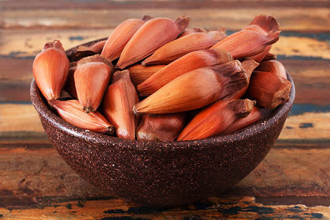
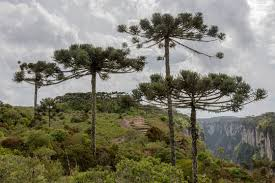
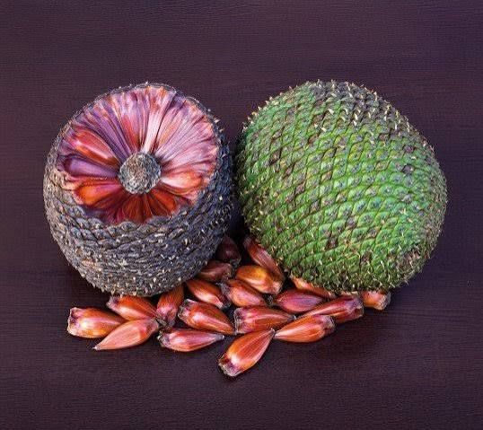

Sobre o pinhão:
O pinhão é a semente comestível do pinheiro-do-paraná (Araucaria angustifolia), uma árvore pré-histórica que existe na região Sul do Brasil há milhares de anos. Muito antes da chegada dos colonizadores, a semente já era a base alimentar de povos indígenas como os Kaingang e Guarani, dando origem inclusive ao nome de Curitiba ("lugar com muitos pinhões"). Dispersada pela natureza com a ajuda de animais como a gralha-azul, a semente foi incorporada à cultura dos tropeiros e imigrantes europeus, tornando-se hoje um dos maiores símbolos culturais e gastronômicos do Paraná.

Como surgiu o Pinhão
O pinhão surgiu há cerca de 200 milhões de anos, ainda na era dos dinossauros, como a semente da araucária (Araucaria angustifolia). Por ser uma árvore primitiva que não produz frutos, sua reprodução acontece dentro de grandes pinhas, onde os pinhões se formam após a polinização pelo vento. Há cerca de 10 mil anos, com o fim da Era Glacial, essas florestas se espalharam pelo Sul do Brasil, onde o pinhão passou a ser dispersado por animais como a gralha-azul — inspirando também a famosa lenda indígena de que a ave recebeu de Tupã a missão de plantar a semente para alimentar os povos da região.

O pinhão é a semente da araucária, uma árvore muito conhecida na região Sul do Brasil. Ele é um alimento tradiconal do Paraná, principalmente durante os meses mais frios.

Curiosidades
Curiosidade 1
O pinhão é a semente da araucária (Araucaria angustifolia), árvore símbolo do Paraná e do Sul do Brasil, considerada um "fóssil vivo" da era dos dinossauros.
Curiosidade 2
No Paraná, o pinhão deu origem ao nome de cidades, pratos típicos famosos e até a um "susto" sazonal no trânsito e nas calçadas.